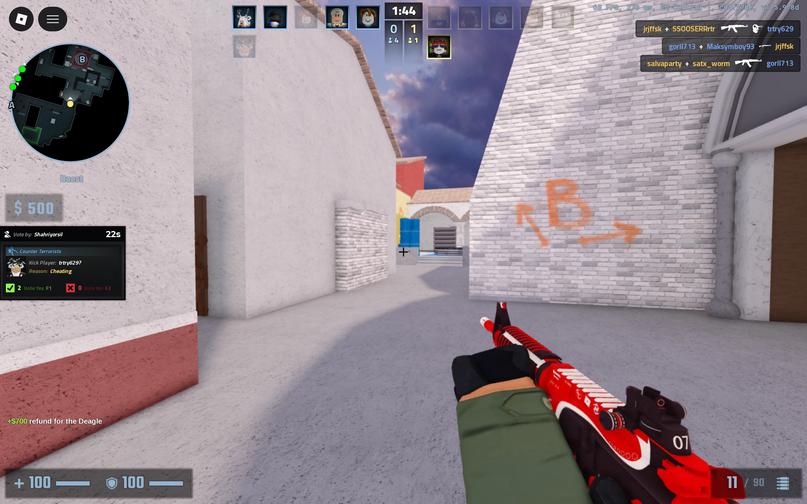
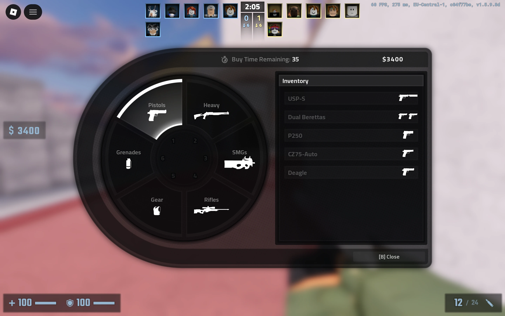
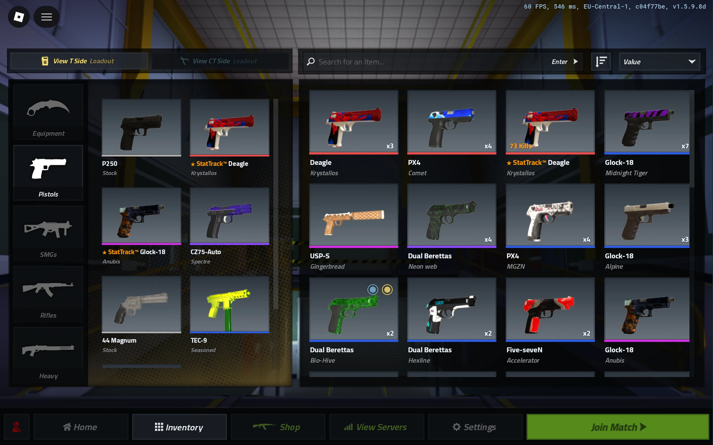
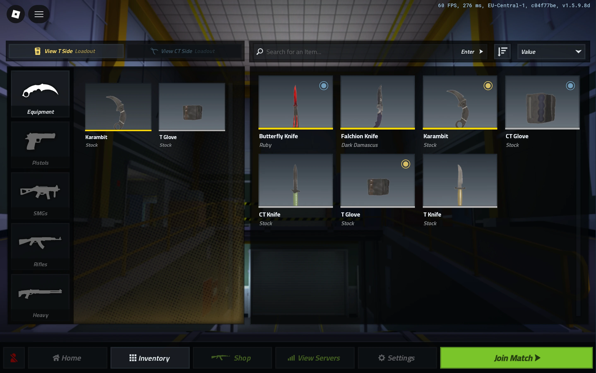

Counter Blox
Contributed to Counter Blox’s weapon framework, persistent data, Twitter code redemption, and trading systems as part of the development team.
Programmer · Team-developed game

My contributions
Explore the systems.
Core gameplay programming
Weapon framework contributions
I contributed to Counter Blox’s weapon framework as part of the development team. The work took place within an established game codebase with accumulated technical debt.


DataStore persistence
Economy and inventory data
Worked with DataStore systems for persistent economy and inventory data.


Game functionality
Twitter code redemption
I contributed to Counter Blox’s Twitter code redemption system within the existing codebase. This was one of my core programming responsibilities alongside weapon, trading, and persistent data systems.
Player systems
Trading functionality
I contributed to the game’s trading system as part of the development team. The work involved existing gameplay functionality and the constraints of a shared legacy codebase.
Engineering takeaway
Working within Counter Blox’s established codebase showed me how inconsistent implementation decisions can make ongoing development more difficult.